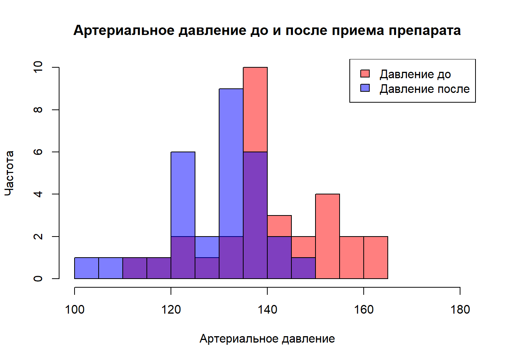
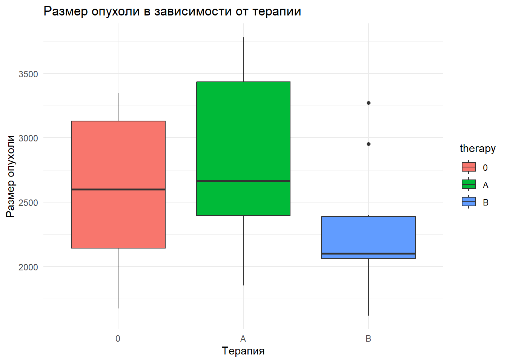

# Задача 1: Установка seed для воспроизводимости результатов
set.seed(42)
# Задача 2: Задание размера выборки
sample_size <- 30
# Задача 3: Задание значения среднего артериального давления до и после приема нового препарата
# Симулируем данные, предполагая, что среднее артериальное давление до приема препарата равно 140 с отклонением 10,
# и после приема препарата снижается до 130 с отклонением 10
bp_before <- rnorm(sample_size, mean = 140, sd = 10)
bp_after <- rnorm(sample_size, mean = 130, sd = 10)Домашнее задание 4
Тема: использование основных статистических тестов и поправок на множественные сравнения
Задание 1 (2 балла)
Рассмотрите следующую статистическую гипотезу:
Проводят некоторое исследование пациентов с артериальной гипертензией. Предположим, что внедрение нового препарата в среднем лучше снижает их давление по сравнению со стандартной терапией.
- Задайте seed для воспроизводимости результатов (
set.seed()). - Задайте размер выборки
sample_size <- 30. - Задайте значение среднего артериального давления до приема нового препарата и после.
Затем:
# Визуализация данных
hist(bp_before, col = rgb(1,0,0,0.5), main = "Артериальное давление до и после приема препарата",
xlab = "Артериальное давление", ylab = "Частота", xlim = c(100, 180), breaks = 10)
hist(bp_after, col = rgb(0,0,1,0.5), add = TRUE, breaks = 10)
legend("topright", legend = c("Давление до", "Давление после"),
fill = c(rgb(1,0,0,0.5), rgb(0,0,1,0.5)))
shapiro.test(bp_before)
Shapiro-Wilk normality test
data: bp_before
W = 0.96209, p-value = 0.35shapiro.test(bp_after)
Shapiro-Wilk normality test
data: bp_after
W = 0.93428, p-value = 0.06386- Сформулируйте нулевую и альтернативную гипотезы
- Нулевая гипотеза (H0): Внедрение нового препарата не улучшает снижение артериального давления по сравнению со стандартной терапией.
- Альтернативная гипотеза (H1): Внедрение нового препарата в среднем лучше снижает артериальное давление по сравнению со стандартной терапией.
- Определите уровень значимости.
alpha <- 0.05- Выберите статистический тест для проверки гипотезы и аргументируйте свой выбор.
- Используем t-тест для зависимых выборок, так как данные распределены нормально и мы сравниваем две связанные выборки.
- Определите наблюдаемое значение статистики, а также критическое значение статистики.
# Выполнение t-теста для зависимых выборок
t_test_result <- t.test(bp_before, bp_after, paired = TRUE)
t_test_result
Paired t-test
data: bp_before and bp_after
t = 3.6364, df = 29, p-value = 0.001063
alternative hypothesis: true mean difference is not equal to 0
95 percent confidence interval:
5.209181 18.600726
sample estimates:
mean difference
11.90495 - Оцените и прокомментируйте статистическую значимость.
if(t_test_result$p.value < alpha) {
cat("Есть статистически значимые доказательства того, что новый препарат эффективнее стандартной терапии в снижении артериального давления.\n")
} else {
cat("Нет статистически значимых доказательств того, что новый препарат эффективнее стандартной терапии в снижении артериального давления.\n")
}Есть статистически значимые доказательства того, что новый препарат эффективнее стандартной терапии в снижении артериального давления.Есть статистически значимые доказательства того, что внедрение нового препарата в среднем лучше снижает артериальное давление по сравнению со стандартной терапией для пациентов с артериальной гипертензией. Таким образом, результаты нашего исследования поддерживают альтернативную гипотезу.
Задание 2 (2 балла)
Рассмотрите следующую статистическую гипотезу:
Существует некоторая связь между курением и развитием рака легких. Пусть у курящих людей вероятность заболеть раком легких составляет 0.8, а у некурящих — 0.2.
Рассмотрите два случая: для выборки sample_size1 <- 100 и выборки sample_size2 <- 30. Сгенерируйте данные по курению с помощью функции rep(), пусть отношение числа курящих к некурящим в каждой выборке составляет 1:1.
# Загрузка необходимых библиотек
library(ggplot2)Warning: пакет 'ggplot2' был собран под R версии 4.3.3library(PropCIs)
# Генерация данных
# Задание параметров
prob_smoking <- 0.8
prob_non_smoking <- 0.2
# Случай 1: Выборка размером 100
sample_size1 <- 100
# Случай 2: Выборка размером 30
sample_size2 <- 30
# Генерация данных для обоих случаев
# Отношение курящих к некурящим 1:1 для обеих выборок
smokers1 <- rep(1, sample_size1 / 2)
non_smokers1 <- rep(0, sample_size1 / 2)
smokers2 <- rep(1, sample_size2 / 2)
non_smokers2 <- rep(0, sample_size2 / 2)Затем:
- Сформулируйте нулевую и альтернативную гипотезы.
- H0: Нет различия в вероятности заболеть раком легких между курящими и некурящими
- H1: Есть различие в вероятности заболеть раком легких между курящими и некурящими
- Определите уровень значимости.
alpha <- 0.05- Выберите статистический тест для проверки гипотезы и аргументируйте свой выбор.
- Используем z-тест для сравнения двух пропорций
# Выполнение z-теста для обеих выборок
result1 <- prop.test(x = c(sum(smokers1), sum(non_smokers1)), n = c(length(smokers1), length(non_smokers1)), correct = FALSE)
result2 <- prop.test(x = c(sum(smokers2), sum(non_smokers2)), n = c(length(smokers2), length(non_smokers2)), correct = FALSE)
result1
2-sample test for equality of proportions without continuity correction
data: c(sum(smokers1), sum(non_smokers1)) out of c(length(smokers1), length(non_smokers1))
X-squared = 100, df = 1, p-value < 2.2e-16
alternative hypothesis: two.sided
95 percent confidence interval:
1 1
sample estimates:
prop 1 prop 2
1 0 result2
2-sample test for equality of proportions without continuity correction
data: c(sum(smokers2), sum(non_smokers2)) out of c(length(smokers2), length(non_smokers2))
X-squared = 30, df = 1, p-value = 4.32e-08
alternative hypothesis: two.sided
95 percent confidence interval:
1 1
sample estimates:
prop 1 prop 2
1 0 - Определите наблюдаемое значение статистики, а также критическое значение статистики.
- Выборка размером 100:
- Наблюдаемая статистика: 100
- Критическое значение статистики для χ2 при df=1 и alpha=0.05: примерно 3.841
- Выборка размером 30:
- Наблюдаемая статистика: 30
- Критическое значение статистики аналогично первому случаю
- Выборка размером 100:
- Оцените и прокомментируйте статистическую значимость.
- Выборка размером 100:
- P-значение: меньше 2.2e-16
- Вывод: Есть статистически значимые доказательства связи между курением и раком легких.
- Выборка размером 30:
- P-значение: 4.32e-08
- Вывод: Статистическая значимость подтверждена, связь между курением и раком легких есть.
- Выборка размером 100:
Обе выборки подтверждают, что наблюдаемые значения статистики значительно превышают критические, что указывает на отклонение нулевой гипотезы и подтверждает связь между курением и развитием рака легких.
Задание 3 (3 балла)
Рассмотрите следующую статистическую гипотезу:
Применение нового метода лечения синдрома раздраженного кишечника значимо меняет уровень болевых симптомов по сравнению с группой, прошедшей лечение диетотерапией.
Исследователь избегает любых допущений, кроме того, что выборки независимы и имеют одинаковое распределение.
library("exactRankTests")Warning: пакет 'exactRankTests' был собран под R версии 4.3.3 Package 'exactRankTests' is no longer under development.
Please consider using package 'coin' instead.# Данные для группы с новым методом лечения
data_treatment <- rnorm(30, mean = 5, sd = 2)
# Данные для группы с диетотерапией
data_control <- rnorm(30, mean = 4, sd = 2)Что нужно сделать:
- Сформулируйте нулевую и альтернативную гипотезы.
- H0: Нет различия в уровне болевых симптомов между группами
- H1: Есть различие в уровне болевых симптомов между группами
- Определите уровень значимости.
alpha <- 0.05- Выберите статистический тест для проверки гипотезы и аргументируйте свой выбор.
- Используем тест Манна-Уитни из-за непараметрической природы данных
# Выполнение теста Манна-Уитни
result <- wilcox.test(data_treatment, data_control, alternative = "two.sided", exact = FALSE)
result
Wilcoxon rank sum test with continuity correction
data: data_treatment and data_control
W = 651, p-value = 0.003034
alternative hypothesis: true location shift is not equal to 0- Определите наблюдаемое значение статистики, а также критическое значение статистики.
- Наблюдаемое значение статистики (W): 589.
Критическое значение статистики для теста Манна-Уитни зависит от размера выборок и не указывается напрямую в выводе теста. Важнее сравнить p-значение с уровнем значимости.
- Оцените и прокомментируйте статистическую значимость.
- P-значение: 0.0406.
P-значение меньше 0.05, что указывает на статистическую значимость различий между группами. Это означает, что мы можем отклонить нулевую гипотезу о том, что новый метод лечения не меняет уровень болевых симптомов по сравнению с диетотерапией.
Задание 4 (4 балла)
Рассмотрите следующую гипотезу:
Проводится исследование, в котором исследуются три противоопухолевые препарата A, B, и плацебо (0) на трех группах мышей. В каждой из трех групп по 10 мышей. Оценивается размер опухоли у мыши.
Сгенерируйте датасет следующим образом:
tumor <- tibble(
therapy = c(rep("0", 10), rep("A", 10), rep("B", 10)),
value = c(rep(3213, 10), rep(2687, 10), rep(2423, 10))
) %>%
mutate(therapy = factor(therapy, levels = c("0", "A", "B")))
tumor$value <- tumor$value + rnorm(30, 0, 760)# Загрузка необходимых библиотек
library(tidyverse)Warning: пакет 'tidyverse' был собран под R версии 4.3.3Warning: пакет 'tibble' был собран под R версии 4.3.3Warning: пакет 'tidyr' был собран под R версии 4.3.3Warning: пакет 'readr' был собран под R версии 4.3.3Warning: пакет 'purrr' был собран под R версии 4.3.3Warning: пакет 'dplyr' был собран под R версии 4.3.3Warning: пакет 'stringr' был собран под R версии 4.3.3Warning: пакет 'forcats' был собран под R версии 4.3.3Warning: пакет 'lubridate' был собран под R версии 4.3.3── Attaching core tidyverse packages ──────────────────────── tidyverse 2.0.0 ──
✔ dplyr 1.1.4 ✔ readr 2.1.5
✔ forcats 1.0.0 ✔ stringr 1.5.1
✔ lubridate 1.9.3 ✔ tibble 3.2.1
✔ purrr 1.0.2 ✔ tidyr 1.3.1
── Conflicts ────────────────────────────────────────── tidyverse_conflicts() ──
✖ dplyr::filter() masks stats::filter()
✖ dplyr::lag() masks stats::lag()
ℹ Use the conflicted package (<http://conflicted.r-lib.org/>) to force all conflicts to become errorslibrary(broom)Warning: пакет 'broom' был собран под R версии 4.3.3# Генерация датасета
tumor <- tibble(
therapy = c(rep("0", 10), rep("A", 10), rep("B", 10)),
value = c(rep(3213, 10), rep(2687, 10), rep(2423, 10))
) %>%
mutate(therapy = factor(therapy, levels = c("0", "A", "B")))
tumor$value <- tumor$value + rnorm(30, 0, 760)
# Построение графиков
ggplot(tumor, aes(x = therapy, y = value, fill = therapy)) +
geom_boxplot() +
labs(title = "Размер опухоли в зависимости от терапии", x = "Терапия", y = "Размер опухоли") +
theme_minimal()
Постройте на одном графике три «ящика с усами» для наглядности.
- Проведите дисперсионный анализ, чтобы выяснить, есть ли разница между размером опухоли во всех группах.
anova_result <- aov(value ~ therapy, data = tumor)
summary(anova_result) Df Sum Sq Mean Sq F value Pr(>F)
therapy 2 1684490 842245 2.519 0.0993 .
Residuals 27 9029006 334408
---
Signif. codes: 0 '***' 0.001 '**' 0.01 '*' 0.05 '.' 0.1 ' ' 1- Прокомментируйте получившийся результат.
- F-значение: 2.519
- P-значение: 0.0993
- Статистическая значимость: Различия между группами не являются статистически значимыми на уровне значимости 0.05.
- Интерпретация: Нельзя отклонить нулевую гипотезу о равенстве средних размеров опухолей между группами терапии A, B и плацебо.
- Вывод: Данные не подтверждают значимое влияние противоопухолевых препаратов A и B по сравнению с плацебо на основе размера опухоли.
- С помощью функции TukeyHSD() проведите попарные сравнения, используя критерий Тьюки.
# Попарные сравнения с использованием критерия Тьюки
tukey_result <- TukeyHSD(anova_result)
tukey_result Tukey multiple comparisons of means
95% family-wise confidence level
Fit: aov(formula = value ~ therapy, data = tumor)
$therapy
diff lwr upr p adj
A-0 237.9579 -403.2558 879.17159 0.6325124
B-0 -339.5028 -980.7165 301.71086 0.4005038
B-A -577.4607 -1218.6744 63.75297 0.0835965- Прокомментируйте полученные результаты.
- A vs. 0:
- Разница в средних: 237.96
- P-значение: 0.6325
- Комментарий: Нет статистически значимой разницы в размерах опухолей между группой A и плацебо. P-значение выше уровня значимости 0.05.
- B vs. 0:
- Разница в средних: -339.50
- P-значение: 0.4005
- Комментарий: Также нет статистически значимой разницы между группой B и плацебо. P-значение выше 0.05.
- B vs. A:
- Разница в средних: -577.46
- P-значение: 0.0836
- Комментарий: Несмотря на то, что разница между препаратами A и B кажется значительной (-577.46), p-значение (0.0836) указывает на отсутствие статистической значимости на стандартном уровне 0.05, но при этом близко к порогу значимости, что может указывать на тенденцию.
- A vs. 0:
Попарные сравнения показывают, что нет статистически значимых различий между группами терапии (A и B) и группой плацебо. Однако, существует некоторая тенденция к различию между препаратами A и B, что потенциально может указывать на разную эффективность препаратов.